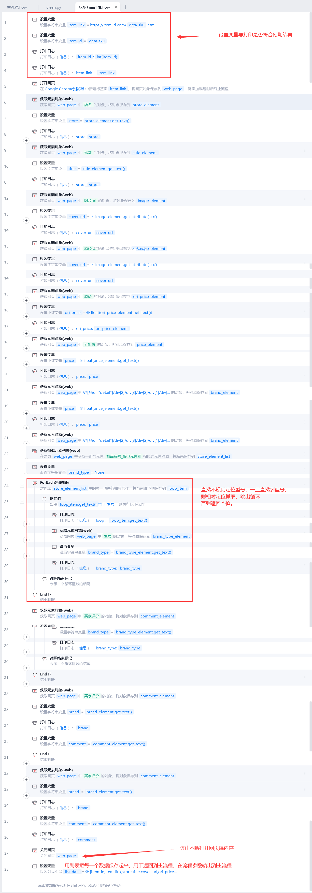

京东RPA爬虫
需求
1 | 商品 ID item_id |
mysql数据库建表
1 | CREATE TABLE IF NOT EXISTS `jd_items` ( |
影刀RPA流程
主流程
获取商品详情子流程

注意：
- 每一个模块都要做好异常处理
- 定位网页数据最好使用xpath方法
数据清洗clean子流程
主流程的数据入库
批量插入数据
invoke_result是子流程返回的元组，返回的数据都在元组里面。
日志
数据库查询结果
本博客所有文章除特别声明外，均采用 CC BY-NC-SA 4.0 许可协议。转载请注明来源 Yinjin Yao的博客！
相关推荐

2025-07-28
医药器械法规数据爬取
名词解释
需求
法律法规知识库的建立
AI环境与知识库
扣子AI智能体应用与系统集成
功能需求： 实现输⼊商品信息接⼝ , 提交商品后根据现有法律法规判断商品是否
%%{init: {"flowchart": {"useMaxWidth": true}}}%%
graph LR
系统A-->AI平台;
系统B-->AI平台;
系统C-->AI平台;
其他-->A工平台;
AI平台-->知识库;
AI平台-->AI大模型;
A工平台-->功能-判断商品是否符合知识库里的法律法规;
知识库-网站;
知识库-->文档-Word_Exce1_Cs;
网站-->爬虫;
爬虫-->RPA;
爬虫-->Python;
文档-word_Excel_CsV-->Pandas;
AI大模型-->本地AI;
AI大模型-->云AI;
法律法规数据爬取网站
国家药品监督管理局 https://www.nmpa.gov.cn/ylqx/index.html （爬取目标1）
国家药品监督管理局医疗器械技术审评中⼼ https://www.c...

2025-05-28
Python
国内常用镜像源
12345678910111213清华大学 ：https://pypi.tuna.tsinghua.edu.cn/simple/阿里云：http://mirrors.aliyun.com/pypi/simple/中国科学技术大学 ：http://pypi.mirrors.ustc.edu.cn/simple/华中科技大学：http://pypi.hustunique.com/豆瓣源：http://pypi.douban.com/simple/腾讯源：http://mirrors.cloud.tencent.com/pypi/simple华为镜像源：https://repo.huaweicloud.com/repository/pypi/simple/
数据类型
数字型： bool int float
⾮数字型： str list tuple set dict
⽇期型： time datetime
例子：
123456sno=1age=18sname="小明"high=1.786print(f"{snam...

2025-07-27
亚马逊商品需求
需求
打开亚马逊网址
根据制定的大类类目，去每个小类目下统计Best Sellers前100名产品的商品ID、标题、图片、价格、链接
把相应信息写进数据库
把本次写入的数据跟上次写入的数据做分析
把有新冲上来的链接、哪条链接调价的结果，发消息通知我 （短信/微信/钉钉/系统通知/QQ邮箱） ## 表设计 1234567891011CREATE TABLE amazon_items ( id INT PRIMARY KEY AUTO_INCREMENT, -- 自增主键categories VARCHAR(64) COMMENT '分类', item_id VARCHAR(64) COMMENT '商品ID', title VARCHAR(255) COMMENT '标题', img_url VARCHAR(255) COMMENT '图片链接', price DECIMAL(8, 2) COMMENT '价格', link VARCHAR(255) COMMENT &...